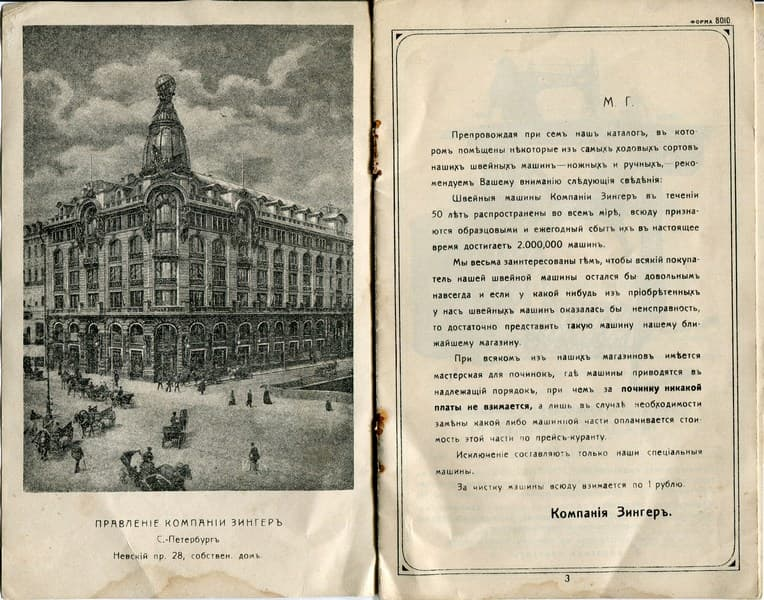
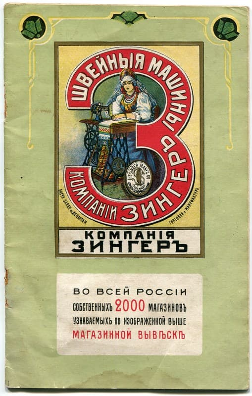
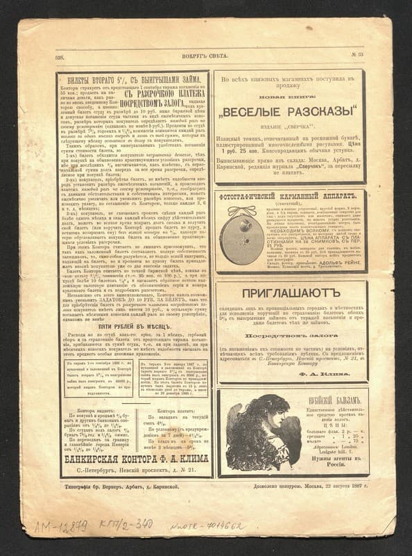

Дореволюционная реклама: как зазывали покупателя в царской России
Музей-заповедник «Александровская слобода»
23 октября в России — День работника рекламы. Прекрасный повод для музея-заповедника «Александровская слобода» открыть свои фонды и показать, как выглядела реклама сто и более лет назад. Старые газеты, этикетки и афиши из коллекции бумаги — это настоящая машина времени, которая переносит нас в эпоху зарождения отечественного рекламного дела.
Настоящий прорыв случился в середине XVI века с началом книгопечатания при Иване Грозном. Вслед за книгами появились «летучие листки» — предшественники современных листовок, а в Петровскую эпоху огромной популярностью пользовались яркие и понятные народу лубки.
Расцвет печатной рекламы: вывески, этикетки и первый рекламный офис
Бум печатной рекламы в России пришелся на середину XIX века, когда бурный рост городов, промышленности и торговли потребовал новых способов привлечения клиентов. Главными «носителями» рекламы того времени стали вывески, в несколько ярусов покрывавшие фасады домов. Зачастую они были неуклюжими, но именно с них началась история торговой рекламы в ее привычном для нас виде.
К концу XIX века от качества и привлекательности рекламы уже напрямую зависел коммерческий успех. Предприниматели не жалели средств на разработку дизайна этикеток и ярлыков, понимая, что шрифт, оформление и текст должны выделять их товар среди других. Именно тогда крылатая фраза «Реклама — двигатель торговли», принадлежащая московскому предпринимателю Метцелю, основавшему первую в России рекламную контору, стала невероятно популярной.

Александровская реклама: скромнее столичной, но со своим характером
В фондах «Александровской слободы» хранится местная рекламная продукция, отпечатанная в основном в московских и петербургских типографиях. Она уступала столичным образцам в художественном исполнении и качестве бумаги, но имела свои узнаваемые черты. Ее появление было связано с развитием местной текстильной промышленности — мануфактур Баранова, Саменкова и других.
Характерной особенностью александровских ярлыков стали изображения фабричных медалей, гордо размещенные в центре. Некоторые производители размещали на рекламе целые панорамные виды своих предприятий «с высоты птичьего полета».

Рекламные находки, актуальные и сегодня
Тогда, как и сейчас, работала «лобовая» реклама, максимально реалистично изображавшая товар. Яркий пример — рекламный буклет швейных машинок «Зингер», где наглядная картинка дополнялась убедительным текстом.

Некоторые рекламные приемы прошлого вызывают улыбку и сегодня. Кому в наши дни не знакомо увлечение фотографией? А ведь уже в 1887 году журнал «Вокруг света» предлагал «секретный» фотоаппарат! Рядом — реклама «нубийского бальзама» от выпадения волос, «изящные томики» рассказов и заманчивые предложения от банкирских контор.

Качественная полиграфия и остроумные тексты некоторых листовок спустя полтора века всё еще способны пробудить желание купить рекламируемый товар. Несомненно, реклама косметики от придворного поставщика «Брокаръ и К» привлекла бы внимание и современных модниц.
Реклама прочно вошла в нашу жизнь, и задача привлечь внимание искушенного зрителя всегда была непростой. Поздравляя всех причастных с профессиональным праздником, желаем рекламщикам вдохновения и неиссякаемой креативности!
Пресс-служба музея-заповедника «Александровская слобода».